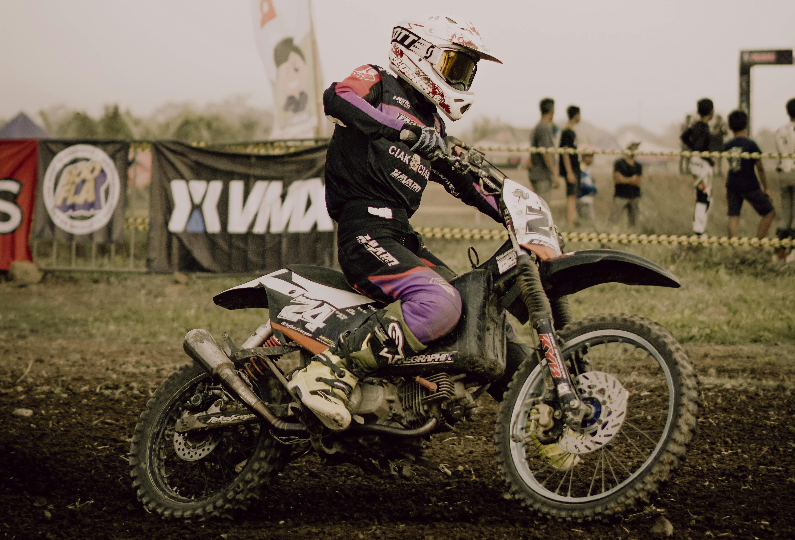
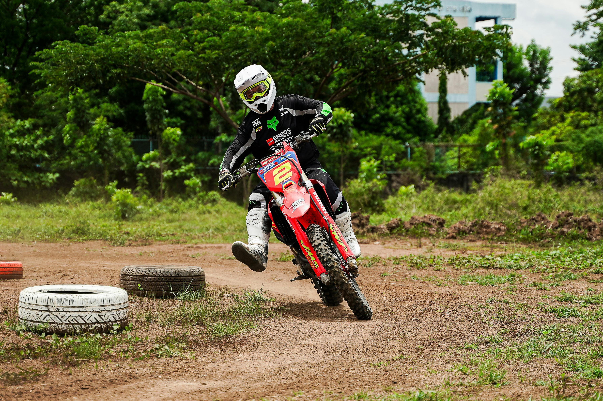

PÕHIHOIAK
See on krossisõidu alustala. Õige asend võimaldab rattal sinu all liikuda, samal ajal kui sa säilitad kontrolli.
- 1Küünarnukid üles ja väljapoole (nagu tiivad).
- 2Seisa päkkadel, mitte jalatalla keskosal.
- 3Põlved surutud vastu kütusepaaki.
- 4Vaata otse ette, mitte esiporilauale.
- 5Selg kergelt kumer ja pea juhtraua kohal.


PÖÖRDED JA KURVID
Kiirus kaotatakse tavaliselt kurvides. Õige tehnika aitab sul kurvi siseneda ja sealt väljuda maksimaalse hooga.
- 1Istu sadula etteotsa, paagi lähedale.
- 2Siruta sisemine jalg ette, suunaga esiratta poole.
- 3Välimine küünarnukk hoia üleval ja suru välimist jalarauada.
- 4Kalluta ratast, mitte oma keha.
- 5Hoia gaasi ühtlasena läbi kogu kurvi.
PIDURDAMINE
Pidurdus peab olema kontrollitud. 70% pidurdusjõust tuleb esipidurist, kuid tagapidur on stabiilsuse jaoks kriitiline.
- 1Kasuta korraga nii esi- kui tagapidurit.
- 2Nihuta keharaskus taha, et tagaratas ei tõuseks õhku.
- 3Hoia põlvedega rattast kõvasti kinni.
- 4Pidurda enne kurvi, mitte kurvi sees.
- 5Säilita sujuv survetugevus hoobadel.


ÕHK JA HÜPPED
Hüpped on krossi põnevaim osa, kuid vajavad täpset ajastust ja enesekindlust.
- 1Hoia ühtlast gaasi kuni hüppe harjani.
- 2Ole rünnakuasendis (keskel).
- 3Ära tõmba juhtrauast, lase rattal ise tõusta.
- 4Maandu mõlemale rattale korraga või kergelt tagarattale.
- 5Maandumisel lisa veidi gaasi, et pehmendada lööki.
HARJUTUSED RAJALE
Pane oma teadmised proovile nende lihtsate harjutustega.
KAHEKSATE SÕIT
Sõida kaheksat ümber kahe tähise. See arendab ratta tunnetust, kallutamist ja jala õiget kasutust.
Vaata täpsemalt >PÜSTISEISTES SÕIT
Terve ringi läbimine püstiseistes, ka kurvides. Sunnib leidma õiget tasakaalupunkti ja jalgadega juhtimist.
Vaata täpsemalt >HÄDAPIDURDUS
Määra joon ja proovi peatuda võimalikult täpselt selle ees, kasutades mõlemat pidurit maksimaalselt.
Vaata täpsemalt >SIDURI KONTROLL
Aeglane sõit võimalikult madalal kiirusel, ilma jalgu maha panemata, kasutades ainult sidurit ja tagapidurit.
Vaata täpsemalt >ÜHE KÄEGA SÕIT
Sirgel teel ühe käega sõitmine. Aitab aru saada, kui palju tööd peavad tegelikult tegema sinu jalad ja torso.
Vaata täpsemalt >RÖÖPASÕIT
Vali pehme rööpaga kurv ja harjuta seal püsimist, keskendudes pilgu suunale ja ratta kallutamisele.
Vaata täpsemalt >